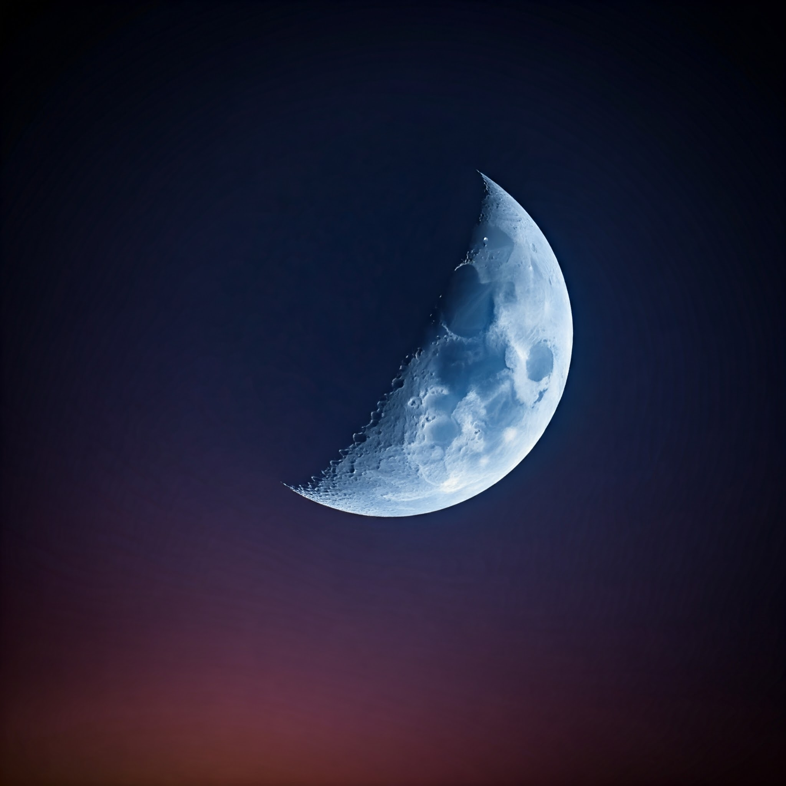

Nuestro satélite cada año se aleja un poquito más de nosotros (3,78 centímetros concretamente). Este alejamiento, lento pero persistente, podría provocar -en unos pocos miles de millones de años- que la Tierra se vuelva muy inestable. ¿Por qué sucede esto? La Luna genera mareas en los océanos de la Tierra y las mareas “consumen” energía por rozamiento. Y como el rozamiento es lo que frena la rotación de la Tierra, la luna retrocede, y eso también ralentiza la rotación de la Tierra. En resumen, la Luna se ve empujada hacia afuera y hace que su órbita sea más grande. Es un proceso imparable.
Leer más: Aquí